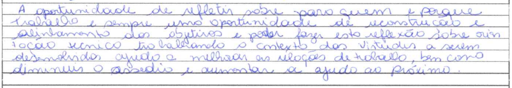
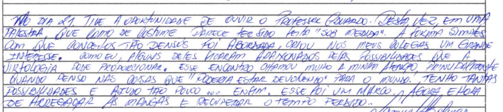
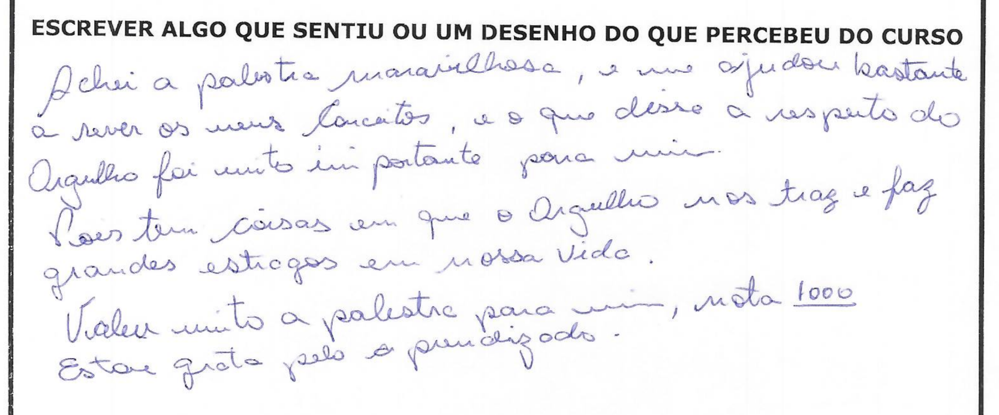
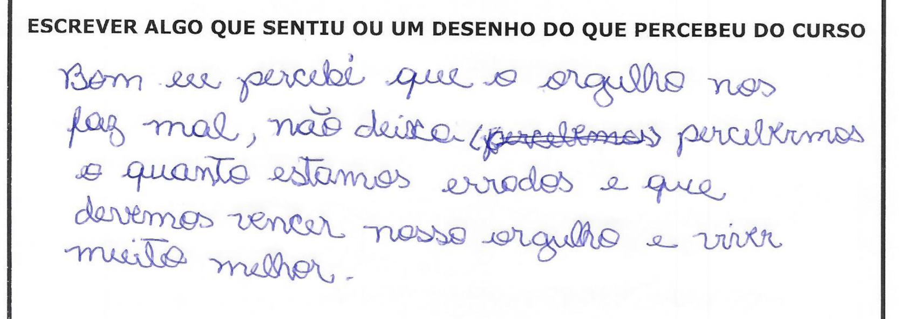
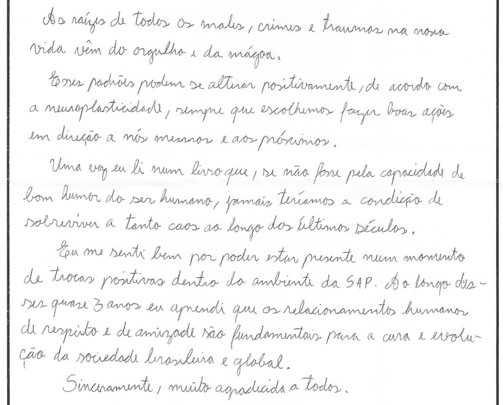

Depoimento em vídeo
Juliana
Psicóloga do sistema prisional
Psicóloga do sistema prisional
Central de Atenção à Pessoa Egressa e Família
Nas palestras de Humanização 2.0 voltadas aos policiais penais, Eduardo Casarotto relaciona o funcionamento humano às condições de trabalho e à convivência institucional. Nessa frente, o desenvolvimento de virtudes se articula à dignidade humana, à liderança e às relações de trabalho.
As cartas tratam do sentido do trabalho, da convivência, das virtudes a desenvolver e das possibilidades de contribuir com outras pessoas. São reflexões de profissionais sobre os aprendizados das formações e sua relação com a atuação cotidiana.

Policial penal — relato sobre palestra de humanização
A oportunidade de refletir sobre para quem e porque trabalho é sempre uma oportunidade de reconstrução e alinhamento dos objetivos e poder fazer esta reflexão sobre um foco técnico trabalhando o contexto das virtudes a serem desenvolvidas ajuda a melhorar as relações de trabalho, bem como diminuir o assédio e aumentar a ajuda ao próximo.Ver imagem original ↗

Policial penal — relato sobre palestra de humanização
No dia 21 tive a oportunidade de ouvir o professor Eduardo. Desta vez, em uma palestra que como de costume parece ter sido feita "sob medida". A forma simples com que conceitos tão densos foi abordada, criou nos meus colegas um grande interesse. Como eu, alguns deles ficaram apaixonados pelas possibilidades que a Virtologia pode proporcionar. Esse encontro chamou muito a minha atenção principalmente quando penso nas coisas que "poderia estar devolvendo" para o mundo. Tenho tantas possibilidades e ajudo tão pouco... Enfim, esse foi um marco, agora é hora de arregaçar as mangas e recuperar o tempo perdido...Ver imagem original ↗
Um depoimento sobre a formação em humanização no Judiciário.
Conheça as ações realizadasExperiências compartilhadas na direção de unidades e na atuação de organizações.
Direção penitenciária · Tupi Paulista
Presidente do Instituto Recomeçar 360
Parceiro institucional do Humanar
Facilitadora e recuperando da APAC de São João del-Rei
Neste depoimento, Cida Mendes participa como facilitadora e Jones como recuperando da APAC de São João del-Rei.
As palestras de Eduardo Casarotto aproximam a Virtologia de temas como orgulho, neuroplasticidade e desenvolvimento de virtudes. Nessa abordagem, olhar para a própria história e reconhecer padrões de resposta são pontos de partida para refletir sobre escolhas, responsabilidade e convivência.
No programa O Novo Eu, esse percurso é organizado em estudo e prática de virtudes, relacionando o entendimento do passado à construção de um projeto de futuro. A proposta de neuroplasticidade em virtudes orienta exercícios e reflexões para o desenvolvimento de novas formas de agir.
Nas cartas, pessoas privadas de liberdade falam sobre rever conceitos, reconhecer os efeitos do orgulho e valorizar vínculos de respeito e amizade. São aprendizados que dão sentido a esse percurso: compreender a própria história, ampliar possibilidades de escolha e construir novos caminhos para o futuro.

Pessoa privada de liberdade — relato sobre orgulho
Achei a palestra maravilhosa, e me ajudou bastante a rever os meus conceitos, e o que disse a respeito do orgulho foi muito importante para mim.Ver imagem original ↗
Pois tem coisas em que o orgulho nos traz e faz grandes estragos em nossa vida.
Valeu muito a palestra para mim, nota 1000
Grata pelo aprendizado.

Pessoa privada de liberdade — relato sobre orgulho
Bom eu percebi que o orgulho nos faz mal, não deixa percebermos o quanto estamos errados e que devemos vencer nosso orgulho e viver muito melhor.Ver imagem original ↗

Pessoa privada de liberdade — relato sobre orgulho
As raízes de todos os males, crimes e traumas na nossa vida vêm do orgulho e da mágoa.Ver imagem original ↗
Esses padrões podem se alterar positivamente, de acordo com a neuroplasticidade, sempre que escolhemos fazer boas ações em direção a nós mesmos e aos próximos.
Uma vez eu li num livro que, se não fosse pela capacidade de bom humor do ser humano, jamais teríamos a condição de sobreviver a tanto caos ao longo dos últimos séculos.
Eu me senti bem por poder estar presente num momento de trocas positivas dentro do ambiente da SAP. Ao longo desses quase 3 anos eu aprendi que os relacionamentos humanos de respeito e de amizade são fundamentais para a cura e evolução da sociedade brasileira e global.
Sinceramente, muito agradecida a todos.
Raquel, psicóloga da ONG Nova Geração Brasil, instituição parceira do Humanar, fala sobre a Virtologia e compartilha sua percepção das mudanças na comunidade e nas crianças em situação de vulnerabilidade a partir do trabalho com o Guia das Virtudes.
Psicóloga da ONG Nova Geração Brasil
Instituição parceira do Humanar
Psicóloga da ONG Nova Geração Brasil
Instituição parceira do Humanar